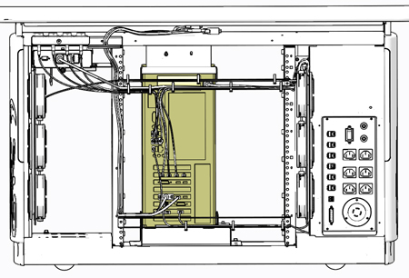
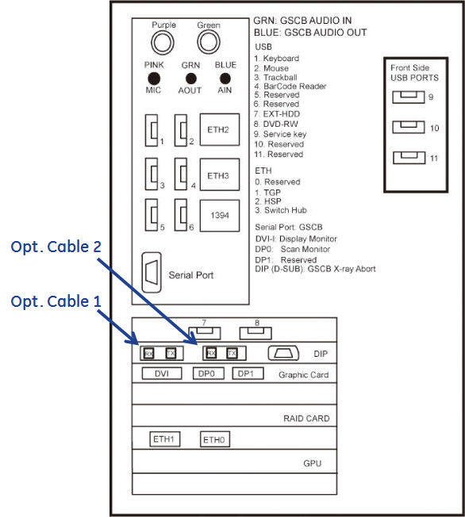
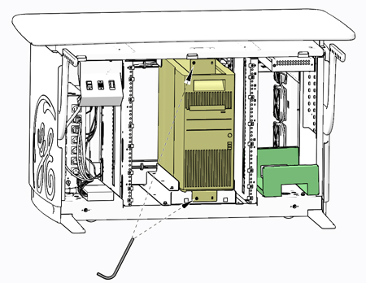
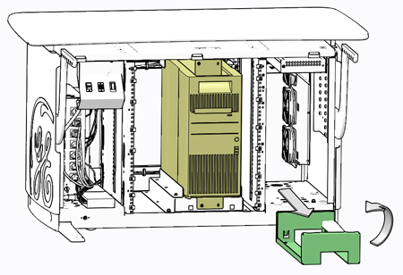
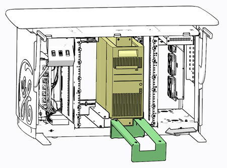
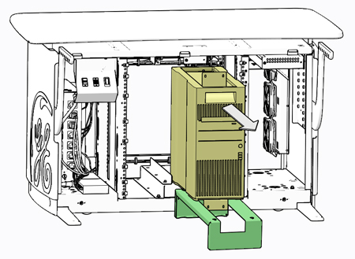
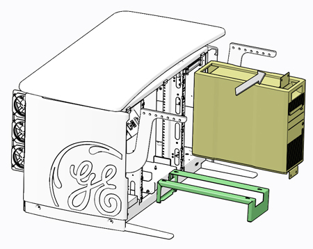
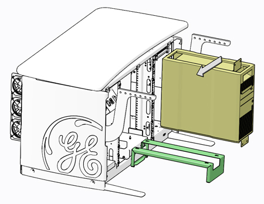

Operating Documentation
Direction 5193574-800, Rev# 22
Module Version 2.0, Version Date 12/17/13
Operating Documentation |
| ||||
| Potential for Shock | ||||
| Voltage may be present. | ||||
| Use proper lockout/tagout procedures before replacing components. See safety menu of Service MANUAL for appropriate procedures. |
| ||||
| POTENTIAL FOR INJURY TO SERVICE PERSONNEL | ||||
| THE NIO64HD Computer IN THE GOC6.6 Console CAN WEIGH IN EXCESS OF 25.2 kg (55.6 lb). | ||||
| DEPENDING ON YOUR HEIGHT AND ACCESS TO EQUIPMENT REMOVAL/INSTALLATION, LIFTING ASSISTANCE MAY BE REQUIRED. USE YOUR JUDGEMENT TO DETERMINE IF LIFT ASSIST OR A SECOND PERSON MAY BE REQUIRED TO ASSIST IN REMOVAL AND INSTALLATION. |
| ||||
| Follow ALL required safety and PPE procedures customary for your organization when working on this product. | ||||
| Condition | Reference | Effectivity |
|---|---|---|
Only trained service personnel should service the GE Scanner. | - | - |
Select one of the following methods to Power OFF the Console:
If Applications are up, click on the [Shut Down] button on desktop display and select [Shutdown].
If Applications are down, open a Terminal Window. Type: halt , then press <Enter>.
When halt command has finished, power Off the console at the front panel switch.
Apply LOTO for Console. For procedures, see Equipment Service - Lockout-Tagout-PPE.
Remove the Console’s Keyboard Tabletop assembly and Front and Rear console chassis covers.
At the rear of the Z820 computer chassis, disconnect all cables attached to the Z820 computer. Make certain that all cables are properly labeled.
Illustration 2: Rear View of Console Chassis

Illustration 3: Z820 Computer Connections

Remove the four (4) 3mm socket caps mounting screws holding the Z820 computer in console chassis.
Illustration 4: Z820 Mounting Screws

Locate the Computer Service Platform stored in the right side of the console chassis. Remove Computer Service Platform from its storage location and place the place it in front of the Z820 computer.
Illustration 5: Computer Service Platform

Using the tabs on the Computer Service Platform, engage the platform to the console chassis to hold the platform in place.
Illustration 6: Computer Service Platform Placement

Slide the Z820 computer forward onto the platform using the handle on the top front of the computer.
Illustration 7: Z820 Computer Removal onto Service Platform

With the Z820 computer fully extracted and placed on the platform, lift the computer up and away using the two handles on the top of the computer.
Illustration 8: Z820 Computer Fully Extracted

Illustration 9: Z820 Computer Removal

Transfer Z820 computer chassis mounting brackets to new computer if necessary.
In order to maintain existing Software Option Licenses on the system, the Ethernet NIC Card from the original Z820 Computer must be exchanged with the replacement computer. If one is certain that the original Ethernet NIC Card has not failed, swap this card to the replacement computer to avoid acquiring new Software Option Licenses. Follow NIC Card Replacement procedure for swapping the Ethernet NIC Card.
Place the replacement Z820 computer onto the Computer Service Platform.
Illustration 10: Z820 Computer Install onto Service Platform

Fully slide the replacement Z820 computer back into the console chassis, until mounting brackets are flush against the chassis.
Illustration 11: Z820 Computer Install into Console Chassis
Remove and store the Service Platform.
Install and torque the four (4) 3mm socket cap screws removed earlier.
Reconnect all cables removed earlier to the Z820 computer (reference Illustration 3).
Remove LOTO on console. For procedures, see Equipment Service - Lockout-Tagout-PPE.
Power On console and check that the Z820 computer is not flashing or sounding any POST errors. If POST errors are present, reference the Z820 Computer Troubleshooting procedure.
Insert OS disk in Z820 computer DVD drive, Power Off the Z820 computer, and disconnect the Hospital Network connection.
Perform a Load From Cold. Reference (13HW31.x) Load From Cold procedure for instructions.
Install console covers and Keyboard Tabletop assembly. Refer to Replacement → Console (GOC6.6) → Console Cover Removal and Installation Procedure.
Perform the Functional Checks → System Scanning Test instructions from the procedure list.
Perform the Functional Checks → Quality Assurance Test instructions from the procedure list.
Perform the Software (GOC6.6) → Software Installation Procedures (LFC) → (13HW31.x) System State Save Restore instructions from the procedure list.